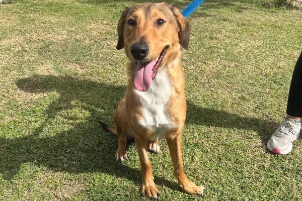

Sábados de patitas
Los días sábados son una fiesta canina en nuestro refugio. Organizamos jornadas especiales de paseos grupales, juegos al aire libre y socialización.
Conocé más →En Patitas Limpias, cada proyecto está pensado para transformar vidas y construir un futuro más amable para los animales. Conocé cómo trabajamos con la comunidad, escuelas y empresas.
Los días sábados son una fiesta canina en nuestro refugio. Organizamos jornadas especiales de paseos grupales, juegos al aire libre y socialización.
Conocé más →
Concientización y educación para los más jóvenes. Ofrecemos charlas dinámicas en colegios sobre tenencia responsable y respeto por los seres sintientes.
Conocé más →
Jornadas de triple impacto para empresas. Los equipos asisten al refugio para colaborar en tareas edilicias, paseos y acondicionamiento.
Conocé más →